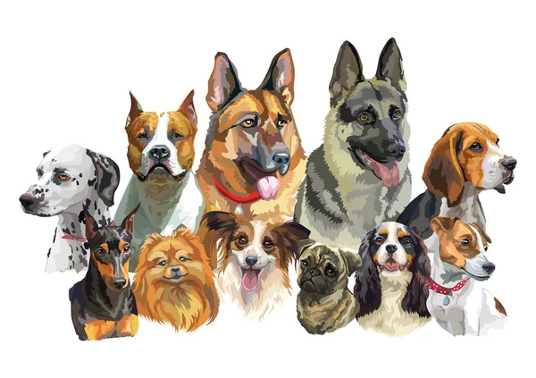

Dog Vision Deep Learning Project
Acquired Skills: Deep Learning, Computer Vision, Convolutional Neural Networks (CNN), TensorFlow, Keras
- Developed an image classification model for recognizing dog breeds using Convolutional Neural Networks (CNNs) in TensorFlow and Keras.
- Implemented advanced computer vision techniques for feature extraction and image preprocessing, enhancing model accuracy and efficiency.
- Utilized transfer learning with pre-trained models to improve performance and reduce training time on large image datasets.
Bulldozer Price Prediction Project
Acquired Skills: Machine Learning, Regression Analysis, Feature Engineering, Data Preprocessing, Python, Scikit-Learn, NumPy, Matplotlib, Jupyter
- Engineered a regression model to predict bulldozer prices, utilizing advanced machine learning techniques and optimizing for RMSLE.
- Performed extensive data preprocessing and feature selection using Python libraries like Pandas and Scikit-learn, improving model accuracy.
- Implemented and fine-tuned ensemble methods such as Random Forest and Gradient Boosting, leading to robust predictions and enhanced model reliability.
Heart Disease Classification Project

Acquired Skills: Machine Learning, Data Science, Python, Scikit-Learn, NumPy, Matplotlib, Jupyter, Data Visualization, Hyperparameter Tuning
- Developed a predictive model for heart disease classification using machine learning techniques, optimizing accuracy and recall.
- Leveraged Python libraries such as Pandas, Scikit-learn, and Matplotlib to preprocess data, perform feature engineering, and visualize key insights.
- Applied logistic regression and decision tree algorithms to classify patient data, enhancing the model's performance through hyperparameter tuning and cross-validation.